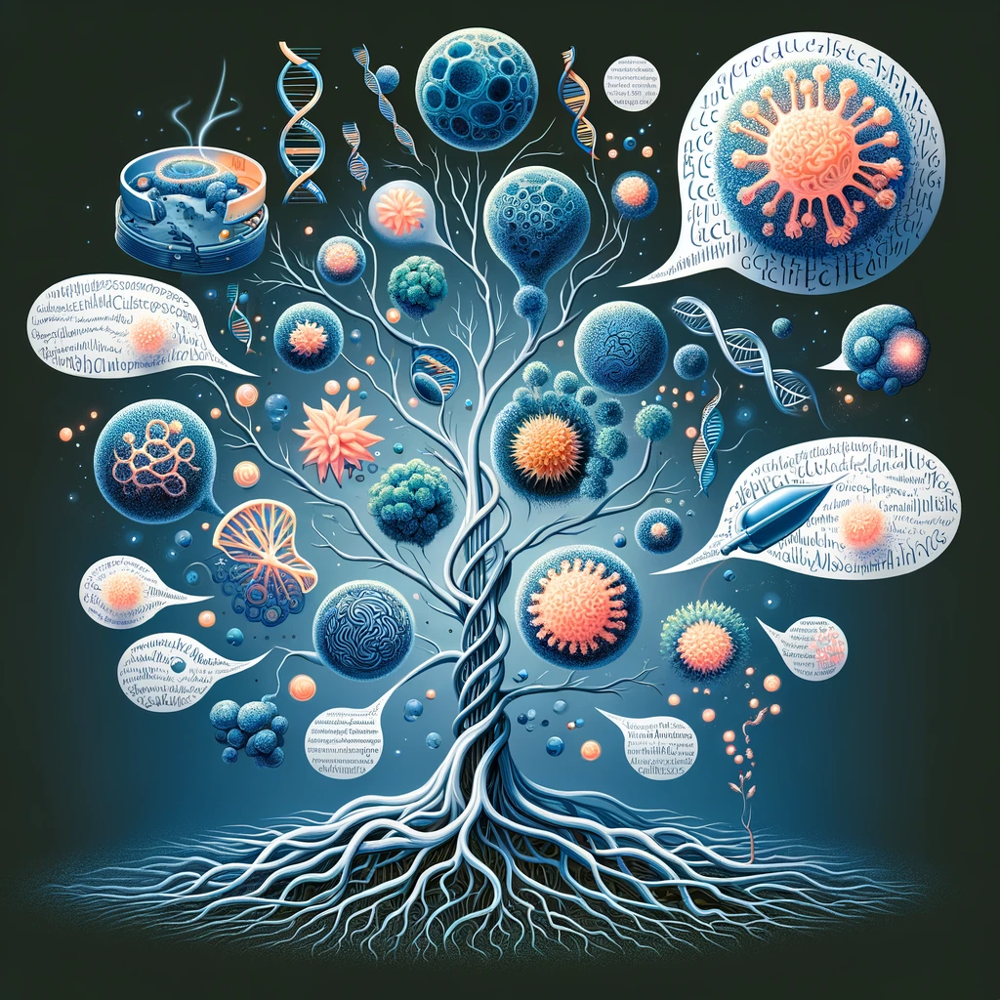

CellWhisperer bridges the gap between transcriptomics data and natural language, enabling intuitive interaction with scRNA-seq datasets.

(Click the annotated screenshot for a 2-minute video-tutorial)